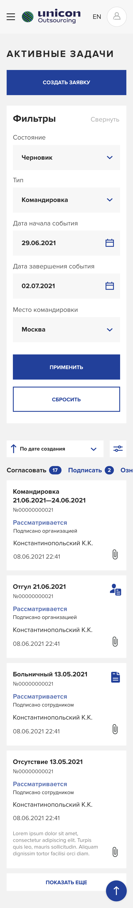
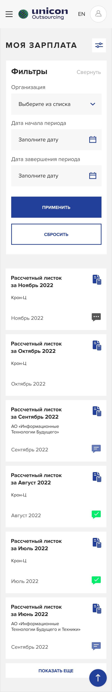

← Все кейсы
Продуктовый дизайн
Unicon Outsourcing
Кабинет сотрудника: согласование задач, заявки на отпуск и командировки, расчётные листки с комментариями.



Кабинет сотрудника
Проектировала веб- и мобильные сценарии кабинета: согласование задач, заявки на отпуск и командировки, работу с расчётными листками.
Данные и действия
Проработала список активных задач, выбор периода и фильтры расчётных листков, просмотр начислений и комментарии. Адаптировала плотные данные под мобильный экран.